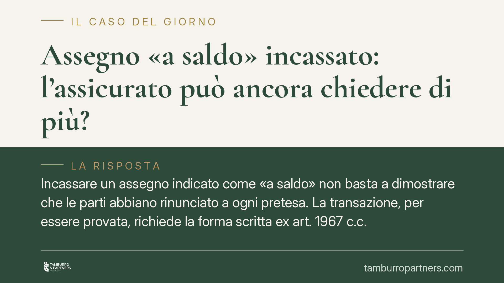

Assegno «a saldo» incassato: l'assicurato può ancora chiedere di più?
Incassare un assegno indicato come «a saldo» non basta a dimostrare che le parti abbiano rinunciato a ogni pretesa. La transazione, per essere provata, richiede la forma scritta ex art. 1967 c.c. La quietanza a saldo resta cosa diversa: chi ha subito un danno può, a certe condizioni, chiedere il residuo. Ecco cosa significa in pratica per assicurati e operatori.

Il punto: quietanza a saldo non è transazione
Ricevere un assegno accompagnato dalla dicitura «a saldo» o «a definizione di ogni pretesa» è una situazione frequente nei rapporti con le compagnie assicurative. La domanda ricorrente è netta: chi incassa quella somma perde il diritto di chiedere altro?
La risposta, secondo l'orientamento consolidato della giurisprudenza di legittimità (Cass. Sez. III, giurisprudenza costante in materia), è negativa in via generale. Il semplice incasso non equivale a transazione. Occorre distinguere due istituti diversi:
- la quietanza a saldo, che è una dichiarazione di ricevuta di pagamento;
- la transazione, che è un contratto con cui le parti pongono fine a una lite (o la prevengono) facendosi reciproche concessioni.
Solo la seconda estingue definitivamente il diritto residuo. E la seconda va provata secondo regole precise.
> Nota redazionale: gli estremi esatti dell'ordinanza richiamata dalla fonte (numero, sezione e data di deposito) sono in corso di verifica. Questo contributo si fonda sull'orientamento consolidato in materia e non su una singola pronuncia non ancora confermata.
Inquadramento normativo
L'art. 1965 c.c. definisce la transazione come il contratto con cui le parti, con reciproche concessioni, pongono fine a una lite già iniziata o prevengono una lite futura. L'elemento essenziale è quello delle concessioni reciproche: senza di esse non c'è transazione.
L'art. 1967 c.c. stabilisce che la transazione deve essere provata per iscritto. Si tratta di forma ad probationem: il contratto è valido anche se concluso verbalmente, ma in giudizio non può essere provato con testimoni né con presunzioni, salvo eccezioni.
Coerentemente, l'art. 2725 c.c. limita la prova testimoniale per i contratti che richiedono la forma scritta, e l'art. 2729 c.c. circoscrive il ricorso alle presunzioni. In questo quadro, la sola dicitura «a saldo» apposta su un assegno non integra la prova scritta di un accordo transattivo: manca la dimostrazione delle reciproche concessioni.
Restano tuttavia praticabili due mezzi di prova ammessi anche in presenza di forma ad probationem: la confessione e il giuramento. L'art. 2724 c.c. individua i casi in cui la prova per testimoni è comunque ammessa, mentre l'efficacia del giuramento è disciplinata dagli artt. 2736 e seguenti c.c. Sono strumenti residuali, ma possono risultare decisivi.
Cosa cambia per l'assicurato
Per chi ha subito un danno e riceve un pagamento definito «a saldo», il messaggio è chiaro: l'incasso non chiude automaticamente ogni possibilità di richiesta ulteriore, se la somma ricevuta non copre l'intero danno.
La compagnia che voglia sostenere l'avvenuta transazione deve dimostrarla con documento scritto che evidenzi le reciproche rinunce. In assenza, il giudice — di pace o in composizione monocratica — può riconoscere la persistenza del diritto al residuo.
Attenzione però: l'apertura probatoria non elimina i limiti temporali. I diritti derivanti dal contratto di assicurazione si prescrivono ai sensi dell'art. 2952 c.c., con termini differenziati (in linea generale un anno per il contratto, due anni per la responsabilità civile derivante dalla circolazione dei veicoli). Il termine concretamente applicabile va valutato caso per caso.
Cosa fare in concreto
- Non firmare mai una liberatoria «a tacitazione di ogni pretesa» senza averla letta integralmente: la formula transattiva, se scritta e chiara, produce effetti definitivi.
- Conservare l'assegno, la relativa dicitura e ogni corrispondenza: la prova documentale è dirimente per stabilire se vi sia stata quietanza o transazione.
- Quantificare il danno effettivo prima di incassare, confrontandolo con l'importo offerto: se il pagamento è parziale, valutare una richiesta del residuo.
- Verificare i termini di prescrizione ex art. 2952 c.c. applicabili al caso specifico, per non perdere il diritto residuo prima di agire.
- Richiedere una valutazione tecnica in caso di dubbio sulla natura della quietanza sottoscritta o sulla presenza di reciproche concessioni.
La distinzione tra quietanza e transazione è sottile ma decisiva. Una lettura attenta del documento sottoscritto e dei suoi effetti resta il primo presidio a tutela del proprio diritto.
---
Contributo informativo a cura di Tamburro & Partners Avvocati - Avv. Giuseppe Tamburro. Non costituisce parere legale.
Ogni contratto ha il suo equilibrio.
Se vuoi una revisione delle clausole o una redazione su misura, scrivi allo studio. Ti rispondiamo entro un giorno lavorativo.